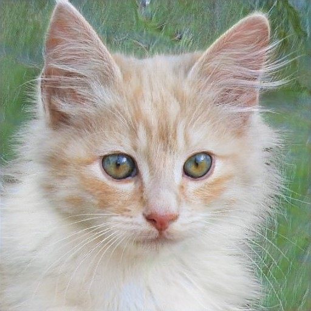

FORSIDE - KATTE - SPØRGSMÅL & SVAR
Feline Haven

Hos Feline Haven kan man adoptere katte i alle aldre og racer. Vores
mission er at give hjem til søde og kærlige katte, der har brug for et nyt
hjem. Feline Haven har et stort udvalg af katte, der alle er blevet
undersøgt af en dyrlæge og er blevet vaccineret og steriliseret. De har
også et team af dedikerede frivillige, der arbejder hårdt for at give
kattene den bedste pleje, indtil de finder deres forever hjem.
Adoptionsprocessen er grundig for at sikre, at katte og familier er et
godt match.
Feline Haven Kattehjem
123 Kattestien
København, Danmark 2100